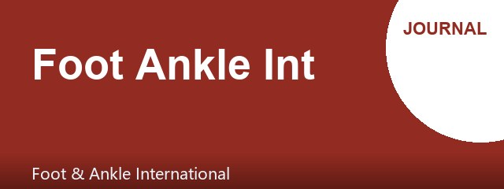

Bankart修复后骨关节炎与盂唇覆盖不足相关
SPORTS MEDICINE & ARTHROSCOPY DIGEST
肩关节镜Bankart修复：盂唇覆盖不足与软骨损伤进展关联影像骨关节炎
第 25 期 · 2026-10-31
10月30日 10 本核心期刊新收录 30 篇 → 精选 28 篇（剔除编辑评论/来信）
本期聚焦肩关节不稳与肩袖修复的预后因素。Bankart修复后影像骨关节炎与盂唇软骨损伤范围及术后覆盖状态相关，提示术中应重视盂唇覆盖重建。巨大肩袖撕裂上关节囊重建中，小圆肌脂肪变性进展是移植物失败的风险因素。此外，踝关节骨折、髋关节镜囊修复、半月板后根修复等研究也为临床决策提供了量化依据。
▍今日主打 · TODAY’S FOCUS
回顾性队列 · III级证据 · 293肩 · 随访≥2年 · Retrospective cohort · Level III · 293 shoulders · ≥2-year follow-up
盂唇软骨损伤范围大及覆盖不足与Bankart修复后影像骨关节炎相关
Greater Glenoid Chondral Lesion Extent and Lack of Labral Coverage Are Associated With the Development of Radiographic Osteoarthritis After Arthroscopic Bankart Repair.
Arthroscopy · 2026-10-30 · 回顾性队列 · PMID 42960725
一句话结论：在293例因复发性前肩不稳行关节镜Bankart修复的患者中，56.3%存在盂唇软骨损伤；损伤范围越大且术后盂唇覆盖不足者，影像学骨关节炎发生率更高。
要点：盂唇软骨损伤根据与裸区的空间关系分为3组；术后盂唇覆盖状态被评估。存在损伤者年龄更大、脱位次数更多。损伤范围大及覆盖不足与影像骨关节炎（Samilson-Prieto≥1级）显著相关。
对临床的启示：该研究提示，对于盂唇软骨损伤范围较大的患者，Bankart修复术中应尽可能恢复盂唇覆盖，以降低远期骨关节炎风险。临床中需权衡软组织修复与骨性稳定。研究为回顾性设计，且骨关节炎评估依赖影像分级，未来需前瞻性研究验证。
Conclusion: Greater glenoid chondral lesion extent and lack of labral coverage are associated with the development of radiographic osteoarthritis after arthroscopic Bankart repair.
Key points: Glenoid chondral lesions were present in 56.3% of shoulders. Lesion extent and postoperative labral coverage status were associated with radiographic osteoarthritis.
Clinical implications: Surgeons should aim to restore labral coverage in patients with extensive chondral lesions to mitigate osteoarthritis risk. The retrospective design warrants prospective validation.
原文 / Source：https://doi.org/10.1002/arj.70668
▍其余 27 篇 · 一屏看完

[膝关节] 全膝关节置换术后早期关节源性肌肉抑制的再思考
Rethinking early arthrogenic muscle inhibition after total knee arthroplasty.
Knee Surg Sports Traumatol Arthrosc · PMID 42960630
摘要：来信指出，术后30天关节源性肌肉抑制（AMI）预测60天持续存在应视为预后关联而非生物学决定因素；SANTI分类在TKA中的适用性待验证，且缺乏客观功能与患者报告结局。
The letter suggests that 30-day AMI predicts persistence at 60 days as a prognostic association rather than a biological determinant; SANTI classification generalizability to TKA remains to be established, and objective functional and patient-reported outcomes are lacking.
原文：https://doi.org/10.1002/ksa.70664
· · · · ·
[肩关节] 优化部分厚度肩袖撕裂生物增强的方法学、生物力学与影像学
Optimising methodology, biomechanics and imaging in biological augmentation for partial-thickness rotator cuff tears: A commentary on Demiral et al.
Knee Surg Sports Traumatol Arthrosc · PMID 42960627
摘要：评论指出PRP联合物理治疗部分厚度肩袖撕裂的研究需关注基线功能可比性、统计模型选择、早期康复负荷的生物-力学界面及MRA撕裂体积估算的影像精确性。
The commentary highlights the need to address baseline functional comparability, statistical model selection, the biological-biomechanical interface during early rehabilitation, and radiological precision in MRA tear volume estimation in studies of PRP for partial-thickness rotator cuff tears.
原文：https://doi.org/10.1002/ksa.70659
· · · · ·

[踝足] 计算机导航全踝关节置换的精度：基于CT的短期报告
Accuracy of Computer-Assisted Navigation in Total Ankle Arthroplasty Surgery Using Computed Tomography: A Short Report.
Foot Ankle Int · PMID 42960558
摘要：13例导航TAA中，胫骨冠状面（1.65°±1.43°）、矢状面（1.87°±1.34°）及截骨高度（0.68±0.62 mm）误差在目标内，但轴向旋转（3.97°±2.64°）和距骨矢状面（3.90°±2.89°）误差较大。
In 13 navigated TAA cases, tibial coronal (1.65°±1.43°), sagittal (1.87°±1.34°) and cut height (0.68±0.62 mm) discrepancies were within limits, but axial rotation (3.97°±2.64°) and talar sagittal (3.90°±2.89°) discrepancies were larger.
原文：https://doi.org/10.1177/10711007261497273
· · · · ·

[肩关节] 小圆肌脂肪变性进展与上关节囊重建后移植物失败相关
Teres Minor Fatty Degeneration Progression by Magnetic Resonance Imaging Analysis Is Associated With Graft Failure After Arthroscopic Superior Capsule Reconstruction.
Arthroscopy · PMID 42960535
摘要：87肩回顾性分析显示，上关节囊重建后1年内移植物失败17例（19.5%），小圆肌脂肪变性进展是移植物失败的独立危险因素。
In 87 shoulders, graft failure occurred in 17 (19.5%) within 1 year after superior capsule reconstruction; progression of teres minor fatty degeneration was an independent risk factor for graft failure.
原文：https://doi.org/10.1002/arj.70693
· · · · ·

[膝关节] 波士顿一体化内侧髌股复合体重建：异体移植物动态张力技术
The Boston All-in-One Medial Patellofemoral Complex Reconstruction: A Combined Medial Patellofemoral Ligament and Medial Quadriceps Tendon Femoral Ligament Dynamic Tensioning Technique Using Allograft.
Arthrosc Tech · PMID 42960305
摘要：技术报告描述使用异体移植物重建整个内侧髌股复合体，结合内侧髌股韧带与内侧股四头肌腱股骨韧带，实现动态张力调整。
This technical note describes reconstruction of the entire medial patellofemoral complex using allograft, combining the medial patellofemoral ligament and medial quadriceps tendon femoral ligament with dynamic tensioning.
原文：https://doi.org/10.1002/atn2.70386
· · · · ·
[肘腕手] 投掷运动员肘关节体格检查的综合回顾
A Comprehensive Review of the Physical Examination of the Elbow in the Throwing Athlete.
Arthrosc Tech · PMID 42959974
摘要：技术报告系统回顾投掷运动员肘关节的体格检查方案，涵盖尺侧副韧带损伤、外翻伸展过载、内侧上髁炎、尺神经炎及桡肱关节病变等。
This technical note reviews a comprehensive physical examination protocol for the throwing athlete's elbow, covering ulnar collateral ligament injury, valgus extension overload, medial epicondylitis, ulnar neuritis, and radiocapitellar pathology.
原文：https://doi.org/10.1002/atn2.70313
· · · · ·
[膝关节] Y形人工韧带重建多韧带膝损伤后外侧角的技术
Using a Y-Shaped Artificial Ligament for Posterolateral Corner Reconstruction in Multiligament Knee Injuries: A Surgical Technique.
Arthrosc Tech · PMID 42959926
摘要：技术报告介绍使用Y形人工韧带经单股骨隧道解剖重建外侧副韧带并功能性重建腘肌腱，以规避自体/异体移植物限制。
This technical note describes posterolateral corner reconstruction using a Y-shaped artificial ligament, achieving anatomic lateral collateral ligament reconstruction and functional popliteus tendon reconstruction through a single femoral tunnel.
原文：https://doi.org/10.1002/atn2.70333
· · · · ·
[肩关节] 高强度缝线带悬吊桥式肩袖修复降低张力
Tension-Reducing Arthroscopic Rotator Cuff Repair Using High-Strength Suture Tape in a Suspension Bridge Configuration.
Arthrosc Tech · PMID 42959924
摘要：技术报告描述使用高强度缝线带以U形穿过肌腱残端，外侧排锚钉固定后，在内排锚钉近零张力下对合残端，减少切割效应以降低再撕裂风险。
This report describes arthroscopic rotator cuff repair using high-strength suture tape in a U-shaped configuration through the tendon stump, secured with lateral-row anchors, and approximating the stump under near-zero tension with medial-row sutures to reduce cut-through and retear risk.
原文：https://doi.org/10.1002/atn2.70335
· · · · ·
[肩关节] 简单打结技术同时防止双排肩袖修复内排缝线松弛与外排锚钉失败
A Simple Knot Technique to Simultaneously Prevent Medial-Row Suture Loosening and Lateral-Row Anchor Failure in Double-Row Rotator Cuff Repair.
Arthrosc Tech · PMID 42959916
摘要：技术报告介绍在双排肩袖修复中，于外排锚钉-骨界面打外科结作为机械阻挡，防止缝线滑脱并维持足印区加压，尤其适用于骨质疏松或巨大撕裂。
This technical note describes a simple knot-tying technique in double-row rotator cuff repair, placing a surgeon's knot at the lateral anchor-bone interface to act as a mechanical stopper, preventing suture slippage and maintaining footprint compression, particularly in osteoporotic bone or massive tears.
原文：https://doi.org/10.1002/atn2.70370
· · · · ·
[髋关节] 腓骨长肌异体肌腱分段髋臼唇重建技术
Segmental Arthroscopic Hip Labral Reconstruction Using a Peroneus Longus Allograft.
Arthrosc Tech · PMID 42959477
摘要：技术报告描述使用腓骨长肌异体肌腱进行分段髋臼唇重建，提供一致移植物尺寸并避免供区病损，强调患者选择、入路、移植物准备与固定。
This technical note describes segmental hip labral reconstruction using a peroneus longus allograft, providing consistent graft sizing and avoiding donor-site morbidity, with emphasis on patient selection, portal placement, graft preparation, and fixation.
原文：https://doi.org/10.1002/atn2.70375
· · · · ·
[膝关节] 盘状半月板腘裂孔相关不稳的全内稳定技术
All-Inside Stabilization of Discoid Lateral Meniscus Popliteal Hiatus-Related Instability Using Anterior Cord Release With Meniscus Retention.
Arthrosc Tech · PMID 42959339
摘要：技术报告介绍联合前角松解与全内垂直褥式缝合固定腘肌腱周围，以保留半月板并控制腘裂孔相关不稳，避免广泛切除。
This technical note describes a meniscus-retaining technique combining anterior cord release and all-inside vertical mattress fixation around the popliteus tendon to control popliteal hiatus-related instability while preserving meniscal tissue.
原文：https://doi.org/10.1002/atn2.70360
· · · · ·
[踝足] 四踝及等效四踝骨折的手术治疗：基于组件的固定结果
Operative Treatment of Quadrimalleolar and Quadrimalleolar-Equivalent Ankle Fractures: Radiographic and Clinical Outcomes Following Component-Based Operative Fixation.
Foot Ankle Int · PMID 42958745
摘要：36例四踝/等效四踝骨折接受基于组件的固定策略，QME多为SER IV/Weber B（94.4%），QM在SER/PER及Weber B/C间均匀分布；术后双侧CT显示下胫腓复位无显著差异。
In 36 quadrimalleolar/quadrimalleolar-equivalent fractures treated with component-based fixation, QME injuries were predominantly SER IV/Weber B (94.4%), while QM showed even distribution; postoperative bilateral CT showed no significant syndesmotic reduction differences.
原文：https://doi.org/10.1177/10711007261496226
· · · · ·
[髋关节] 髋关节镜囊修复改善12个月愈合且愈合与早期PROMs相关
Capsular Repair Improves 12-Month Healing and Favorable Healing Correlates With Better Early Patient-Reported Outcome Measures in Femoroacetabular Impingement Syndrome Patients Undergoing Hip Arthroscopy.
Arthroscopy · PMID 42958725
摘要：69例FAI髋关节镜患者中，囊修复组12个月囊愈合率更高，且愈合组在6个月和12个月时患者报告结局（mHHS、HOS-ADL、HOS-SSS、UCLA、VAS）更优。
Among 69 FAI patients undergoing hip arthroscopy, capsular repair improved 12-month capsular healing, and healed patients had better patient-reported outcomes (mHHS, HOS-ADL, HOS-SSS, UCLA, VAS) at 6 and 12 months.
原文：https://doi.org/10.1002/arj.70694
· · · · ·
[膝关节] 术前软骨下不全骨折与内侧半月板后根修复后结局较差相关
Preoperative Subchondral Insufficiency Fractures Are Associated With Decreased Clinically Significant Outcome Achievement, Higher Reoperation Rates, and Greater Osteoarthritis Progression After Medial Meniscus Posterior Root Repair at a Minimum 2-Year Follow-Up.
Arthroscopy · PMID 42958723
摘要：91例后根修复患者中37.4%存在SIFK，SIFK组达到MCID和PASS的比例显著更低（KOOS-JR：80.7% vs 38.2%），再手术率更高，骨关节炎进展更明显。
In 91 patients undergoing posterior root repair, 37.4% had SIFK; the SIFK group had significantly lower rates of achieving MCID and PASS (KOOS-JR: 80.7% vs 38.2%), higher reoperation rates, and greater osteoarthritis progression.
原文：https://doi.org/10.1002/arj.70712
· · · · ·
[髋关节] 盂唇移植物增容与股骨填充术改善过度Cam切除后的髋关节牵张稳定性
Labral Graft Volume Augmentation and Femoral Remplissage Have Positive Impact on Hip Distraction Stability After Excessive Cam Resection: An Ovine Model.
Arthroscopy · PMID 42958653
摘要：羊模型显示过度Cam切除显著降低吸力密封强度；4倍厚度重建和2倍+填充术组恢复最佳（Δ1=0.78N和4.53N），单独填充术部分恢复，基线重建最弱。
In an ovine model, excessive cam resection significantly reduced suction seal strength; 4× reconstruction and 2×+remplissage groups achieved the best restoration (Δ1=0.78N and 4.53N), remplissage alone provided partial recovery, and baseline reconstruction was weakest.
原文：https://doi.org/10.1002/arj.70679
· · · · ·
[膝关节] 胫骨结节截骨治疗髌骨不稳并发症低且患者报告结局良好
Tibial Tuberosity Osteotomy for Patellar Instability Has Low Complication Rates and Favorable Patient-Reported Outcomes: A Systematic Review and Meta-analysis.
Arthroscopy · PMID 42954411
摘要：系统综述纳入12项研究1110例患者，TTO术后总体并发症率13.4%，Kujala评分78.1-96.0，IKDC 83.0-88.4，Lysholm 76.7-94.0，再手术取内固定为主要并发症。
This systematic review of 12 studies and 1110 patients found an overall complication rate of 13.4% after TTO, with mean Kujala scores 78.1-96.0, IKDC 83.0-88.4, and Lysholm 76.7-94.0; hardware removal was the main complication.
原文：https://doi.org/10.1002/arj.70669
· · · · ·
[踝足] 经踝与基于入路的微创胫距关节准备：尸体研究
Transmalleolar vs Portal-Based Minimally Invasive Tibiotalar Joint Preparation: A Cadaveric Study.
Foot Ankle Int · PMID 42954402
摘要：14例尸体下肢随机分组，经踝微创技术较传统入路微创技术准备胫距关节的比例更高，且未增加后胫肌腱、后胫动脉和胫神经损伤风险。
In 14 cadaveric lower extremities, the transmalleolar MIS technique prepared a higher proportion of the tibiotalar joint than the portal-based MIS technique without increasing risk to the posterior tibial tendon, artery, or nerve.
原文：https://doi.org/10.1177/10711007261496281
· · · · ·
[膝关节] 股四头肌腱自体移植物ACL重建：全软组织与腱骨移植物短期结局无差异
Quadriceps Tendon Autograft for Primary Anterior Cruciate Ligament Reconstruction Has No Difference in Short-Term Clinical Outcomes Between All-Soft Tissue Versus Tendon-Bone Grafts: A Systematic Review.
Arthroscopy · PMID 42954106
摘要：系统综述纳入5项研究（996例ST-QT，1279例QT-B），两组移植物失败率（2.4%-7.6% vs 3.3%-6.4%）无显著差异，髌骨骨折仅见于QT-B组（2例）。
This systematic review of 5 studies (996 ST-QT, 1279 QT-B) found no significant difference in graft failure rates (2.4%-7.6% vs 3.3%-6.4%); patellar fracture occurred only in the QT-B group (2 cases).
原文：https://doi.org/10.1002/arj.70597
· · · · ·
[膝关节] 半月板中央化改善内侧半月板后根修复后结局并限制突出
Meniscal Centralization Improves Outcomes and Limits Extrusion After Medial Meniscus Posterior Root Repair: A Systematic Review.
Arthroscopy · PMID 42954043
摘要：系统综述纳入6项研究148例患者，后根修复联合中央化后Lysholm提高21.1-42.3分，IKDC提高24.1分，VAS降低1.7-3.1分，5/6研究显示术后半月板突出<3mm。
This systematic review of 6 studies and 148 patients found that root repair with centralization improved Lysholm by 21.1-42.3 points, IKDC by 24.1 points, and reduced VAS by 1.7-3.1 points; 5 of 6 studies showed postoperative extrusion <3 mm.
原文：https://doi.org/10.1002/arj.70691
· · · · ·
[肩关节] 关节镜下仅缝线关节内软组织长头肱二头肌腱固定于肩袖
Arthroscopic Suture-Only Intra-articular Soft-Tissue Long-Head Biceps Tenodesis to the Rotator Cuff.
Arthrosc Tech · PMID 42953489
摘要：技术报告描述使用环-钉配置和缝线穿梭将长头肱二头肌腱固定于前上肩胛下肌，无需锚钉，维持生理长度-张力关系并降低成本。
This technical note describes arthroscopic suture-only intra-articular long-head biceps tenodesis to the anterior supraspinatus using a loop-and-tack configuration and suture shuttling without anchors, maintaining physiological length-tension relation and reducing costs.
原文：https://doi.org/10.1002/atn2.70365
· · · · ·
[膝关节] 全缝线无结锚钉外侧关节外腱固定术
Lateral Extra-articular Tenodesis With All-Suture Knotless Anchor.
Arthrosc Tech · PMID 42953463
摘要：技术报告介绍使用全缝线无结锚钉行改良Lemaire外侧关节外腱固定术，以增强ACL重建的旋转稳定性并降低再断裂率。
This technical note describes a modified Lemaire lateral extra-articular tenodesis using an all-suture knotless anchor to augment ACL reconstruction, improving rotational stability and reducing rerupture rates.
原文：https://doi.org/10.1002/atn2.70345
· · · · ·
[膝关节] 改良缝线抓取技术用于关节镜半月板缝合
Modified Suture-Gripping Technique for Arthroscopic Meniscal Suturing.
Arthrosc Tech · PMID 42953373
摘要：技术报告介绍使用ARTHRO-PIERCE装置进行改良缝线抓取技术，其更锐利的尖端和更坚硬的杆身改善前角及前体部半月板缝合的穿透性和缝线控制。
This technical note describes a modified suture-gripping technique using the ARTHRO-PIERCE device, which offers a sharper tip and more rigid shaft to improve penetration and suture control for anterior meniscal suturing.
原文：https://doi.org/10.1002/atn2.70374
· · · · ·
[肩关节] 关节镜囊松解在冻结肩术后6个月内改善活动度优于非手术治疗
Arthroscopic Capsular Release Provides Greater Range-of-Motion Improvement Within the First 6 Months Postoperatively Than Nonoperative Management Modalities in Frozen Shoulder: A Systematic Review and Meta-analysis of Randomized Controlled Trials.
Arthroscopy · PMID 42952285
摘要：Meta分析纳入6项RCT共705例患者，关节镜囊松解在术后6个月内活动度改善达到MCID，但随时间减弱；疼痛改善有统计学意义但未达临床意义，安全性相当。
This meta-analysis of 6 RCTs and 705 patients found that arthroscopic capsular release improved range of motion within 6 months postoperatively, reaching MCID but diminishing over time; pain improvement was statistically significant but not clinically meaningful, with comparable safety.
原文：https://doi.org/10.1002/arj.70519
· · · · ·
[膝关节] 开放楔形高位胫骨截骨术多平面矫正误差与内侧开口及截骨充分性相关
Anteromedial Gap Opening and Osteotomy Sufficiency Are Associated With Multiplanar Correction Errors in Open-Wedge High Tibial Osteotomy: A Computed Tomography-Based Study.
Arthroscopy · PMID 42952223
摘要：110膝CT分析显示，平均开口角误差-0.1°，胫骨后倾增加2.6°，内旋2.7°；计划开口角与冠状面矫正不足和内旋相关，截骨充分性与较小PTS增加和更大内旋相关。
In 110 knees, CT analysis showed mean opening-angle error -0.1°, PTS increase 2.6°, and internal rotation 2.7°; planned opening angle was associated with coronal undercorrection and internal rotation, and osteotomy sufficiency with smaller PTS increase but greater internal rotation.
原文：https://doi.org/10.1002/arj.70697
· · · · ·

[运动医学] 超马拉松跑者睡眠策略与运动表现：系统综述
Sleep Strategies and Performance Outcomes in Ultramarathon Runners: A Systematic Review.
Sports Health · PMID 42952135
摘要：系统综述纳入9项研究2262名超马拉松跑者，赛前睡眠减少与较差的身体和认知表现相关；赛中睡眠时间越长，完赛时间越长，反映非移动时间增加。
This systematic review of 9 studies and 2262 ultramarathon runners found that reduced pre-race sleep was associated with poorer physical and cognitive performance; greater intra-race sleep duration was consistently associated with longer finish times, reflecting increased nonmoving time.
原文：https://doi.org/10.1177/19417381261494498
· · · · ·
[运动医学] 职业足球运动员肌肉撕裂ADC采样疗效及性别差异
Efficacy of Apparent Diffusion Coefficient Sampling in Muscle Tears and Intersex Differences in Professional Football Players: A Cohort Study.
Sports Health · PMID 42952126
摘要：26名职业足球运动员（13男13女）肌肉损伤后2周ADC值从2.06±0.35降至1.61±0.30 mm²/s（降低21.84%），女性ΔADC（0.56±0.25）大于男性（0.32±0.20）。
In 26 professional football players (13 male, 13 female), ADC values decreased from 2.06±0.35 to 1.61±0.30 mm²/s (21.84% reduction) at 2 weeks; female players had greater ΔADC (0.56±0.25) than male players (0.32±0.20).
原文：https://doi.org/10.1177/19417381261492942
· · · · ·
[肩关节] ADHD与肩袖修复后粘连性关节囊炎、滑囊炎、肩关节僵硬及翻修率较低相关
Attention-Deficit/Hyperactivity Disorder Is Associated With Lower Rates of Adhesive Capsulitis, Bursitis, Shoulder Stiffness, and Revision Shoulder Arthroscopy After Arthroscopic Rotator Cuff Repair.
Sports Health · PMID 42952097
摘要：倾向评分匹配后各4740例，ADHD组术后3个月滑囊炎（OR 0.733）、粘连性关节囊炎、肩关节僵硬及翻修关节镜发生率较低，与假设相反。
After propensity score matching (4740 per cohort), patients with ADHD had lower odds of bursitis (OR 0.733), adhesive capsulitis, shoulder stiffness, and revision arthroscopy at 3 months, contrary to the hypothesis.
原文：https://doi.org/10.1177/19417381261497018
· · · · ·
💬 一起聊聊：对于盂唇软骨损伤范围较大的Bankart修复患者，您会采取哪些措施来优化盂唇覆盖并降低远期骨关节炎风险？
本内容由 AI 辅助整理，仅供学术交流参考，观点与数据请以原文为准，不构成诊疗建议。文献题录与摘要来源：PubMed。
— 运动医学 · 关节镜文献速览 · 第 25 期 —